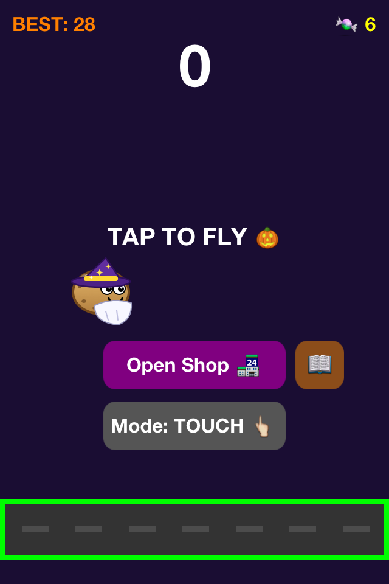
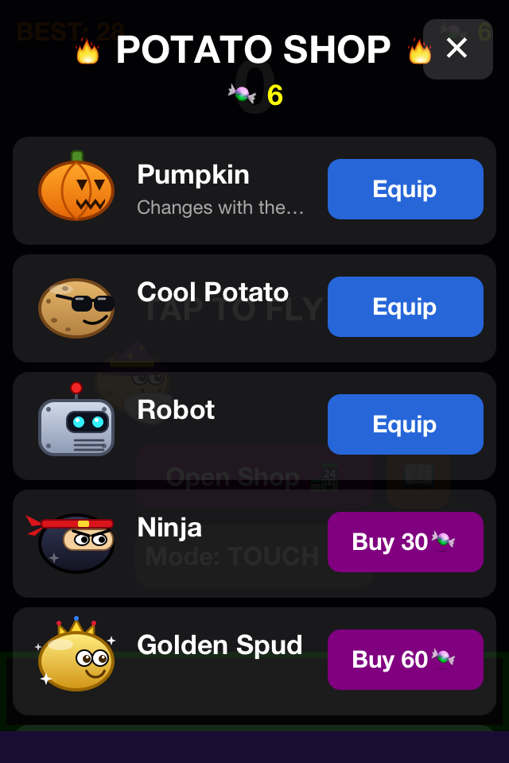
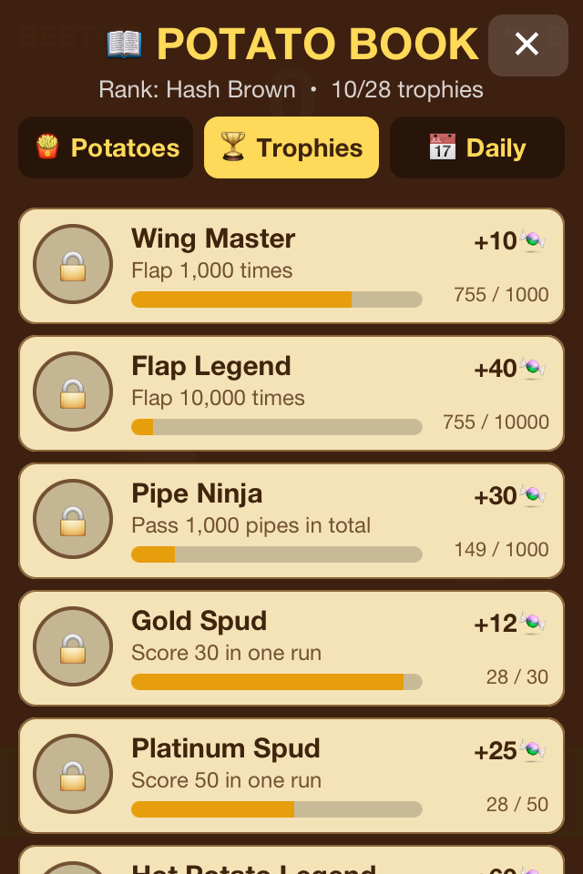

Flappy Potato
| 🥔👻 | |
| Genre | Arcade, endless runner |
|---|---|
| Version | 1.4 - Spooky & Local Host Update |
| Platforms | iOS 6 |
| Programming Language | Objective-C / Node.js |
| Controls | Touch / Voice (microphone) 🗣️ |
Flappy Potato is an arcade game inspired by Flappy Bird, where the player controls a potato flying between obstacles. The game was built in its classic form for iOS 6. The dark Halloween Update is currently active, adding multiplayer support with an option to run your own local host server in the new version!
Gameplay
The player taps the screen (or uses their voice!) to give the potato upward momentum; otherwise, the character falls due to gravity. The goal is to fly through the gaps between pairs of obstacles without colliding with them, the ground, or the edge of the screen. For each obstacle passed, the player receives one point. A collision ends the game.

Halloween Update 🎃 - What's New?
For the spirit of Halloween, the game received a dark and atmospheric update introducing plenty of new features:
- Scream to Fly (Voice Control) 🗣️: A brand new, innovative game mode has been added! Using the button in the menu, you can switch controls from touch to voice. Scream into the microphone to make the potato jump – the louder the sound, the higher it flies!
- Candies and Character Shop 🍬: Candies randomly appear during flight. Collect them to accumulate currency! For 15 candies, you can randomly unlock a new look for your potato in the shop.
- Dark Skins: Replace the classic base pumpkin and unlock the Ghost (👻) or Zombie (🧟) skin with a characteristic scar.
- Spooky Visual Effects: The potato now leaves a fading, dark trail effect behind it during flight. The clear sky has been replaced with purple-navy gloom, and instead of ordinary clouds, bats, ghosts, and spiderwebs fly across the sky (🦇, 👻, 🕸️).
- New Obstacles: Pipes have gained a dark, gray-orange color scheme fitting the atmosphere.

Installation from GitHub (PC / Linux / Mac)
All project files – including the latest client app FZ1,4.ipa and the server script server.js – are located in our official GitHub repository.
1. Installing the game on iOS 6:
- Download the FZ1,4.ipa file from the GitHub repository to your computer's disk.
- Download and install a sideloading program on your computer (e.g., Sideloadly or Apple Configurator for macOS).
- Connect your iOS 6 iPhone / iPad / iPod to the computer using a USB cable, drag the
FZ1,4.ipafile into the program, and click "Start" / "Install". (Note: Jailbreak and the AppSync tweak are required for older systems).
2. Running your own server (Local Host / Berek):
- Download the
server.jsfile from the GitHub repository. - Make sure you have the Node.js environment installed on your computer.
- Run the server in the terminal using the command:
(You can also use a custom port, e.g.,node server.jsPORT=4000 node server.js) - The server will indicate your local IP addresses (on the same Wi-Fi network) where players can connect to their Local Host and play together in multiplayer mode!

Technical Aspects
- Movement in the game is calculated per frame rather than time, so the game speed depends on the stability of approx. 60 FPS.
- Network communication is based on the TCP protocol (JSON per line), which guarantees full compatibility with the aging iOS 6 networking stack (CFStream).
- Sound detection uses the
AVFoundationlibrary and analyzes the average sound power in decibels. - The High Score ("BEST"), the amount of candies collected, and the currently selected skin are permanently saved in the device's storage (
NSUserDefaults).